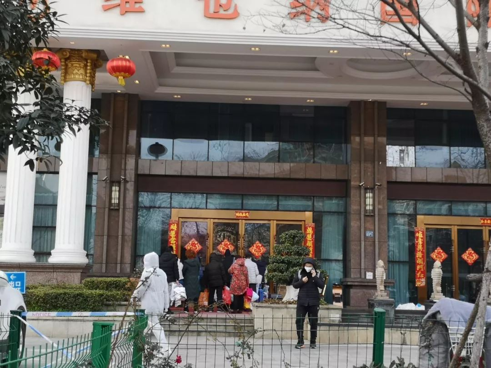

武汉“四类人员”集中收治第一日：“我们没有被抛弃！”
原文链接 备份链接 在医学专家们看来，集中收留、隔离是第一步。接下来对疑似病患的确诊、分类诊治、收治入院，将是对医疗、物资、人员分配等多重资源配置能力的综合考验，相信各方面群策群力可以渡过难关 文 |《财经》 …


为防止居家隔离造成交叉感染，从根本上控制感染源，武汉开始对确诊、疑似、发热及密切接触者进行集中收治和隔离。
具体执行中，劝服人员前往隔离点的工作很难。他们期待：能够对患者进行治疗，或者形成一条入院检测和就医的绿色通道。
武汉目前为新冠肺炎患者开放了8000多张床位，随着火神山、雷神山、更多定点医院开放，近期可以过万。
另外准备建11个“方舱医院”，提供床位上万张，收治轻症患者。
集中收治和隔离、阻断传染源的难题，看到了解决的希望。


△ 2月3日，隔离酒店门口，疑似患者询问工作人员目前隔离情况。吴靖摄。
2月3日下午，武汉的一家四星级酒店门口，一位四十多岁的中年妇女，戴着口罩气喘吁吁地在讲电话。门口几位穿着防护服的工作人员远远地看着她，不敢上前。
“你应该把我送到医院去做治疗，你丢我到这里，让我等死吗？”她拎着一堆换洗衣物和CT片，站在酒店门口的马路边，朝电话那头的社区工作人员低声怒吼，“我这么重的病人就把我拖这里观察？到时候晚上要吸氧了，啥都没有，那就等死了是不是？”
她是通过核酸试剂检测后的“双阳”确诊患者，说完几句话后，她的嗓子感到不适，立即摆摆手，示意周围的人走远些。随即咳了好一会儿，有些喘不过气。她在等丈夫接她回家。
这是武汉市要求对新冠肺炎确诊、疑似、发热及密切接触者“四类人员”集中收治和隔离政策下达执行的第二天。
此前，这四类人员都是让社区工作人员监督他们“居家隔离”。但短短两周内，武汉本地新冠肺炎的确诊人数已超过8000，加上疑似病例，早已过万，显示出居家隔离难以阻断感染源。
家庭内部隔离和防护措施不足，往往是一个家庭内部的多个成员被感染。社区工作人员不堪重负，加之工作人员口罩、防护服等物资严重不足，上门排查的任务难以完成。电话排查阻挡不了一些疑似患者和确诊患者依旧从家中外出，形成巨大的交叉感染隐患。
△ 钟南山接受采访时说：确诊和疑似患者居家隔离非常危险。视频来源：CCTV
为防止居家隔离难以避免的交叉感染，从根本上控制住感染源，2月2日，武汉市新冠肺炎防控指挥部要求各区，从即日起，对涉及新冠肺炎的“四类人”采取集中收治、隔离措施：对确诊患者无条件集中收治，尽快安排床位；对疑似患者集中隔离，征用一批民营医院，配备必要生活、消毒、医疗设施，最快时间安排检测；对发热患者集中隔离观察；对密切接触者集中隔离。
至此，各社区有了具体执行的明确规范，但即便如此，劝服四类人员从家中转移到隔离点的工作依然艰难。确诊病人希望转移到医院进行入院治疗，其它三类病人要么担心隔离点的隔离条件有限，再次形成交叉感染；要么不放心留在家中的家人。
短短几天内临时征用酒店的隔离点，标准各不相同。有的只隔离密切接触人群；有的将确诊人群、高度疑似人群和密切接触人群安置在一个隔离点的不同楼层；有的配备少数医护人员，为轻症患者配备药物；有的没有配备医护人员和药物。
但几乎所有类型的患者，对隔离点都有一个共同的期待：能够对患者进行治疗，或者形成一条入院检查和就医的绿色通道。
要满足这样的期待，需要更多的床位。
患者和家属们的担忧
2月3日下午，上述女士所在的街道派车送她来到了这家酒店，她一开始感到兴奋，兴奋感取代了入院遥遥无期的绝望。对她来说，不用再每天提心吊胆地担心丈夫被感染，这是这个家里始终埋着的一颗隐形炸弹。
办理入住时，她把疑惑统统抛给了酒店前台，对方答复她，没有药物，没有吸氧机，没有医疗设备，有几个医生和体温计，来这里是隔离观察，不是治疗——这和社区工作人员告诉她的“隔离点有医护人员和医疗措施”不一样。
此时，涌入酒店的人越来越多，公安的车和街道的车一趟一趟接人过来，门口排起了长队，有确诊患者，也有疑似患者，他们在被隔离在这家宾馆的不同楼层，5层是疑似患者，10到11层是确诊患者。160个左右的床位，在短短两天内已经快满了。
和这位女士一样的是，几个确诊患者从隔离点里缓慢地走出来，门口的工作人员能够阻挡想要进去探视的家属和记者，但不敢阻挡这些喘气费力、步履缓慢的患者，无奈地看他们一个个走出来。确诊患者们，即使是只需要隔离观察、住院意义不大的轻症患者，他们希望的还是能住上医院，得到治疗，而不是被隔离在这里。
2月2号上午，社区工作人员给张腾电话，让他上报父母的姓名，劝服他将父母送往隔离点，他们已做CT高度疑似冠状肺炎，但尚未做核酸检测。
半个多小时的劝服过程中，张腾一直在追问，隔离的人能不能做核酸检测？如果确诊是阳性，能否安排住院？工作人员不是太肯定地承诺，“隔离点就是做核酸检测的地方”，但需要将隔离人员名单上报给医院的两三天后，他的父母才能做核酸检测。
工作人员说可以将他的父母上报成“危重症病人”，这种情况下，也可以居家隔离，但做“核酸检测的时间会快一点”。
张腾了解到，目前在医院等待做核酸检测的时间和社区工作人员承诺集中隔离人群做检测的时间相差无几。比如，武汉市第七医院是2-3天，武汉市中南医院是3-4天。并且，当听说隔离点没有医护人员，不能打针吃药后，反复权衡之下，张腾回绝了社区的要求。
就在当晚8点，张腾此前联系的武昌医院发来信息，告诉他第二天早上，家属可以去做核酸检测了。
当晚，在他反复要求下，社区派了一辆车送他父母去医院提前排队。他用共享单车推着食物、被子走了一个多小时，送到彻夜排队的父母那里，第二天一早，他双肺感染的妈妈做了核酸检测，结果还没出来，而单肺感染的父亲达不到做核酸检测的标准，就没做。
与此同时，社区依旧打电话劝去隔离点，考虑到隔离点还有没有药和医护人员，张腾最终还是拒绝了。

△ 疑似和确诊患者在隔离酒店排队办理入住。吴靖摄。
社区的难题
四类人群都要实行不同程度的隔离，对武汉这2000多个社区来说，挑战并不小。这就考验不同社区在此前十几天里，对四类人群的跟踪是否及时和到位。判定该患者是轻症还是重症，送入不同的隔离场所，以及如何劝说患者同意隔离，都是社区工作者需要琢磨的。
政策发布后，原则上只给社区工作者一天时间劝服居民。实施过程并不顺利，一些社区工作者吃了不少闭门羹，因各区域隔离标准都不相同，再次引发部分患者不满。
据八点健闻了解，很多社区一下子没法那么快将四类人群快速隔离，有的街道干脆就不按病情轻重程度来分，凡是确诊的，都上报街道等待入院；凡是疑似的和密切接触者，都被隔离到酒店。有的街道，四类人群数量庞大，顾不上疑似的和发热病人，先把确诊的和密切接触者做了隔离。有的社区，确诊患者安排不上住院的，干脆也被隔离到酒店。
政策发布当晚，某社区书记王云（化名）临时被叫去街道管理部门开会。2月2日夜里12点之前，要把所有确诊病人“清零”，即上报给街道管理者，街道开入院接收单，并把所有确诊病人全部转到医院。而与这些确诊患者的密切接触者，则要被隔离到附近酒店，隔离14天。但并未提及疑似患者和发热居民该如何安排。
“这是因为真的顾不过来了”。王云说，连她自己都不知道，发热居民到底有多少。社区工作者防护服并不充裕，此前都以带电话代替上门排查，她无法确定，居民是否会隐瞒发热史。
此外，街道管理者对“密切接触者”做了一个明确定义：和确诊患者同吃同住，或同乘一辆车，或在一个办公室工作的人，确诊患者一定是经过核酸检测的双阳患者。
开会完后，王云和同事挨个儿给每个确诊患者家属打电话，劝说她们第二天就收拾好，去附近酒店隔离，酒店是街道安排的，免费入住。第二天一早，再次打电话过去，所有确诊患者家属全都拒绝了，理由是不放心患者在家，社区先安排上家人入院再说。而社区附近的定点医院，早已人满为患，一床难求，社区工作者无法对他们入院与否做出任何承诺。
拖到2月3日，王云社区的确诊患者人数蹭蹭蹭往上涨，但还是没有密切接触者被说服去酒店隔离。
这是一个极其现实的问题，确诊患者入院治疗的问题不解决，密切接触的家人接受集中隔离绝非易事。至于隔离酒店人员配备问题，据央视新闻报道，在汉阳区的某个隔离点，目前是24个密切接触者配一名医生和护士。

△警车送疑似患者来隔离酒店。吴靖摄。
各显神通劝服不同类型的人群
有的社区从高度疑似患者入手，打算先隔离这类等待核酸试剂检测的人。
2月4日上午，硚口区某社区的汪琴接到了来自父母所在社区工作人员的电话，对方告诉她，如果父母同意去酒店隔离，很快就能安排上核酸试剂检测，不用去医院排队，一旦确诊，就有机会住院。
汪琴的父亲1月25日出现了发热，为了防止被传染，汪琴带着女儿回了武汉的另一个家，父母单独在家里隔离。父亲28日做了CT检查，是高度疑似，拿了药回家吃，但之后一直反复发烧。2月2日，再次去医院检查CT，肺部感染比上次更严重，但始终排不上核酸试剂检测，这意味着离入院还要等上好久。这期间，母亲也感染上了肺炎。
“要么就在家，要么就去酒店隔离，统一安排核酸试剂检测，但具体什么时候，我不清楚”。对方直截了当。
汪琴权衡再三，还是决定放弃去隔离酒店，那里无法提供药物以及打针等治疗措施，而父亲每隔一天就要上医院打一次针。
另一个家住硚口区的高度疑似患者，2月2日下午被临时接到了隔离酒店，但到了之后才发现，隔离酒店还没有备好退烧药等常用治疗药物。
有的社区意识到，一开始劝说高度疑似患者隔离并不容易，涉及到吃药打针等后续服务难以实现的现实困境。社区工作人员干脆转变了策略，劝说较为容易隔离的一批人——密切接触者。
家住汉阳区的张阳，其父母都是高度疑似患者。2月2日早上，社区来了电话，说疑似患者要集中隔离，防止扩散，问张阳是否愿意，张阳答应了，认为这是一个好事，切断传染源，父母吃住也有保障。
当天晚上，社区再次打来，让立刻收拾行李，开车把父母送到隔离酒店，丢下一句话，进去了就不能随便出来了。
张阳突然反应过来，父母还要做复查，怎么安排？父母病情如果突然加重，有没有呼吸支持设备？父母还要续药，怎么办？社区的人被问住了，回复是，不知道。最后，张阳拒绝了。
但到了第二天，情况发生变化。张阳父亲拿到了核酸检测试剂的结果，是阳性，从疑似患者变成确诊患者。此时，社区的策略也临时做了调整：不再劝说张阳的父母，而是劝说他本人去隔离——从高度疑似人群转移到密切接触者。
社区工作人员以尽力为张阳父亲安排医院床位为条件，张阳心动了。2月3日下午，张阳决定去隔离。
傍晚，他被街道安排的车接到了酒店，办理入住时，前台拉他进了“XX密接人员观察点”的群，两天内，群里很快加了60多人。
酒店房间是一人一间，群主叮嘱，没有特殊情况不得出门，甚至连出房间门也不行。一日三餐会按时送到门口，戴口罩开门拿餐。
但是，隔离酒店是临时被征用，酒店没有一个服务员，目前都是只有4名医护人员兼职做服务员，“之前开价5000元做7天，都找不到人来！”群主在群里说，“所以我们只能提供最最基本的生活服务”。
接下来的14天里，张阳将在这个20平方米的空间里活动，每天量2次体温。如果发现发热，酒店会安排绿色通道送去发热门诊。
“如果说我父母情况非常糟糕，拿刀架在我脖子上，我都不敢来，但起码他们目前还能自理”。他现在唯一的期待是，社区能实现承诺，给父亲安排床位。
火神山、雷神山、方舱医院
更多床位是解决问题的希望
床位，正是摆在面前的难题。
一位早在1月23日拿到武汉市第五医院住院名额的患者，十几天快过去了，依旧没有住上院。
江汉区某一社区有十个确诊患者，因医院床位紧张，街道一个也没能安排他们入院。
其中有一个患者，通过自己排队住院的方式，治愈了；其余三个患者，用各自的关系申请住院。
一个居民的公公婆婆在诊断为高度疑似冠状病毒肺炎患者之后，最终没有住进医院，于1月29日，31日先后去世，期间她无数次打电话给街道，街道让他们自己打120。公婆去世后，他们夫妻成为密切接触家属，沉浸于失去亲人悲痛中的他们，因为对街道和社区的不信任，对集中隔离非常抵触。
一位社区工作人员谈到：“现在核酸检测比以前容易，一些医院的门诊开通了检测渠道，但患者确诊之后，依旧没有床位。”
昨天，拥有1000张床位的火神山医院已接收了第一批病人，今天，雷神山医院也将完工，1600张床位即将开放，而武汉定点医院也正在分批开放，近期新增2000多床位。
据武汉卫健委发布的数据，截至2020年2月3日23：00，武汉市28家定点医院共开放床位8199张，其中包括火神山第一批接收的50张。
另外，2月3日，武汉紧急在洪山体育馆、武汉客厅、武汉国际会展中心建“方舱医院”，新增3400张床位，可收治轻症病人，并保持重症转诊通道。
△ 探访“方舱医院”，视频来源：红星视频
“方舱医院”是解放军野战机动医疗系统的一种，由若干可以移动的模块建成，这些模块可以是真正的房屋，也可以是帐篷等可以临时搭建的处所。在特殊情况中，它发挥了急救医院的作用。先后参加过汶川地震、青海玉树地震等紧急医疗救援任务。
4日晚新华社又发布消息，武汉“方舱医院”扩容至11家，接诊床位增至万余张。
四类人员集中收治和隔离、切断传染源的难题，看到了解决的希望。
吴靖 王晨 吴晔婷|撰稿
王吉陆|责编


我们尊重原创版权，未经允许请勿转载。
授权转载
郑琪 微信号: 1281949389
商务合作
上海：leslee 13916263824
北京：Jessie 13911125922
线索爆料、意见反馈，加入核心读者社群
请扫码联系健闻君

让朋友们看到你也在看
↓↓↓
原文链接 备份链接 在医学专家们看来，集中收留、隔离是第一步。接下来对疑似病患的确诊、分类诊治、收治入院，将是对医疗、物资、人员分配等多重资源配置能力的综合考验，相信各方面群策群力可以渡过难关 文 |《财经》 …
原文链接 备份链接 在医学专家们看来，集中收留、隔离是第一步。接下来对疑似病患的确诊、分类诊治、收治入院，将是对医疗、物资、人员分配等多重资源配置能力的综合考验，相信各方面群策群力可以渡过难关 2月3号上午8点，人们在七医院门口排队等待核 …
原文链接 备份链接 翁文的爸爸和奶奶，在武汉相继患上了新冠肺炎。在北京工作的翁文，每天只能通过监控，关注着他们的一举一动。几经折腾，爸爸终于入院，83岁的奶奶却依旧孤立无援。 文 | 吴美芬 翁文是一名在北京工作的武汉人，他远在武汉的爸 …
原文链接 备份链接 【财新网】（记者 丁捷 黄姝伦 宿慧娴）新型冠状病毒疫情持续升温，新增确诊人数以千位计。截至2月2日24时，全国确诊病例累计17205例，新增确诊病例超过七成集中在湖北省；全国疑似病例累计21558例，追踪到密切接触 …
原文链接 备份链接 经济观察网 见习记者 陈月芹 1月29日凌晨3点，家住武汉硚口的李馨（应受访者要求，李馨为化名）在微博、知乎等社区平台上求助：“我不知道怎么样才能排到一个珍贵的床位，为什么明明说好接收所有疑似病人，现实却是辗转求医，没 …